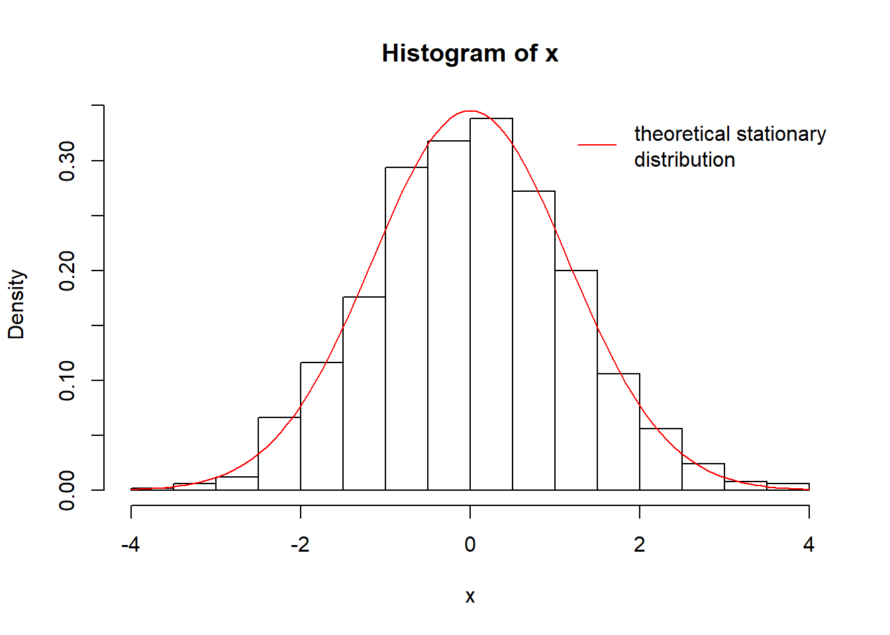
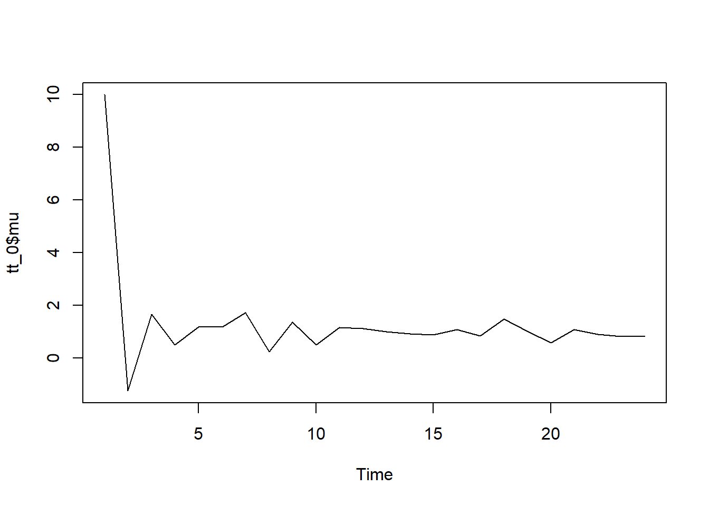
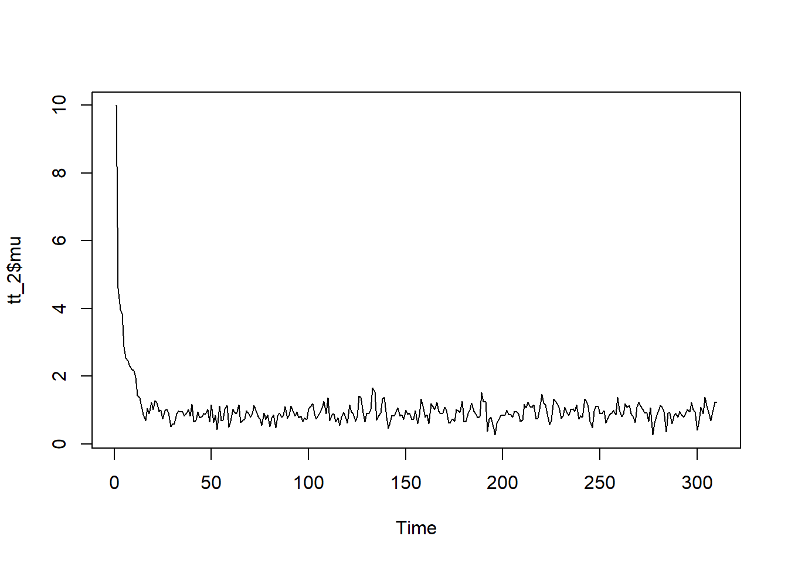
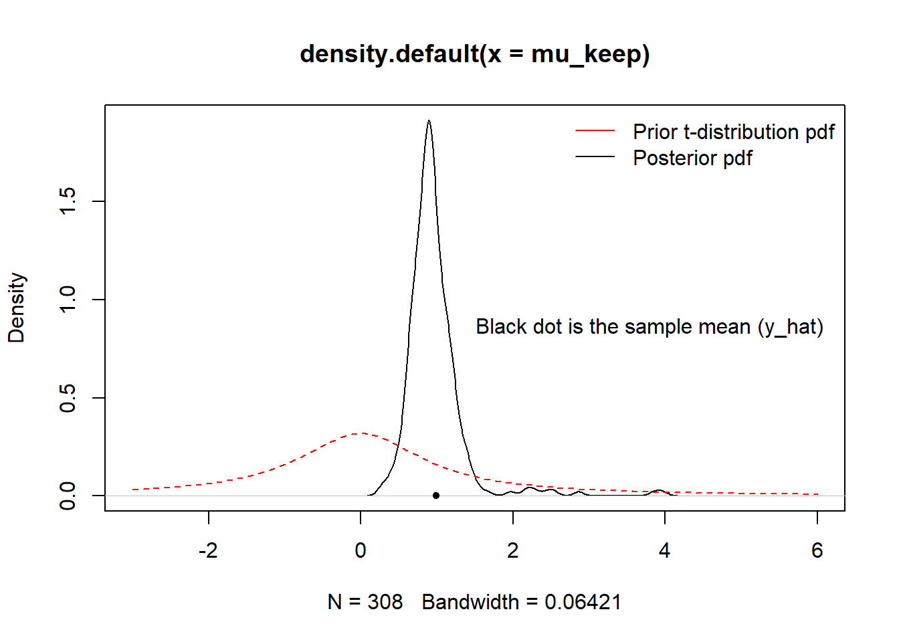

Chapter 2 Bayesian - 2
2.1 Components of Bayesian models
\[y_i=\mu+\epsilon_i\]
Where,
\[\epsilon_i \sim N(0, \sigma^2)\]
\[y_i \sim N(\mu, \sigma^2)\] (Thus, \(y_i\) is \(=\) to a fixed \(\mu\) plus with a \(\epsilon_i\), whereas \(y_i \sim N(\mu, \sigma^2)\). These two expressions are not exactly the same, but they are connected.)
Likelihood: \(P(y|\theta)\) (\(P(y,\theta)=P(\theta)P(y|\theta)\))
Prior: \(P(\theta)\)
Posterior:
\[P(\theta|y)=\frac{P(\theta, y)}{P(y)}=\frac{P(\theta, y)}{\int P(\theta, y)d\theta}=\frac{P(\theta)P(y|\theta)}{\int P(\theta, y)d\theta}=\frac{P(\theta)P(y|\theta)}{\int P(\theta)P(y|\theta)d\theta}\] Markts
The only random variables in frequentist models are the data. In contrast, Bayesian paradigm also uses probability to describe one’s uncertainty about unknown model parameters.
Consider the following model for binary outcome \(y\):
\(y_i|\theta_i \sim Bern (\theta_i), i=1,2,3...6\)
\(\theta_i |\alpha \sim Beta(a, b_0), i=1,2,3...6\)
\(\alpha \sim Exp(r_0)\)
Thus, the joint distribution of all variable:
\[\prod_{i=1}^{6}[\theta_i^{y_i}(1-\theta_i)^{1-y_i}\frac{\Gamma(a+b_0)}{\Gamma(a)\Gamma(b_0)}\theta_i^{a-1}(1-\theta_i)^{b_0-1}]r_0e^{-r_0 \alpha}\] (Question: Why not write it as \(a_i\)?)
2.2 Monte Carlo Estimation
2.2.1 Mean and Variance: Application of Central Limit Theorem
If we simulate 100 samples from a Gamma(2,1), what is the approximate distribution of the sample average \(\bar{x^*}=\frac{1}{100} \sum_{i=1}^{100} x_i^*\)?
As we know, based on the central limit theorem, the approximating distribution is normal with the mean equal to the sample mean, and the variance equal to the variance of the orignal variable divided by the sample size. We know that the mean for Gamma(2,1) is \(\frac{2}{1}=2\) and variance is \(\frac{2}{1^2}=2\). Thus, we know that the mean for the distribution for \(\bar{x^*}\) is 2, whereas the variance is \(\frac{2}{100}\). Thus, it is \(N(2,0.02)\).
Thus, we can get the generalized formula as follows:
\[\bar{\theta^*} \sim N(E(\theta), \frac{Var(\theta)}{m})\] Note that, it is the variance for \(\bar{\theta^*}\), not \(\theta\). The approximate for the variance for \(\theta\) is \(\frac{1}{m}\sum(\theta_i^*-\bar{\theta^*})^2\).
The following R code is for the \(\theta\):
## [1] 2.0128## [1] 1.036456The following R code is for the \(\bar{\theta^*}\). As we can see, the variance is 0.0016, which is close to the true value of \(\frac{1}{1000}=0.001\).
## [1] 0.001634891Side Note
Note that the definition of variance is:
\[V(x)=E[(x-\mu)^2]\]
Thus, we can calculate the variance using integral:
\[V(x)=\int (x-\mu)^2 f(x)dx\] When we using samples from the simulation, we will get the following:
\[V(x)=\int (x-\mu)^2 f(x)dx= \frac{1}{m} \sum (x_i^*-\bar{x^*})^2\] Thus, we can use \(Var\) function in \(R\) with simulated sample to calculate the variance.
2.2.2 Monte Carlo error (Standard Error)
For the \(\bar{x^*}\), we can use the CLT to approximate how accurate the Monte Carlo estimates are.
\[\frac{SD(sample)}{\sqrt{m}}\]
set.seed(123)
sample_data_gamma<-rgamma(10000,4,2)
hist(sample_data_gamma, freq=FALSE)
curve(dgamma(x=x, shape=4, rate=2), col="blue", add=TRUE)
## [1] 0.9682145## [1] 0.9839789## [1] 0.9839789## [1] 0.009839789We can also calculate Standard Error for the probablity

## [1] 0.00095479172.2.3 Expected value and probability
If you know that \(\theta \sim Beta(5,3)\), what is the approximate for the \(E(\frac{\theta}{1-\theta})\)? You can use the following R code to calculate it.
## [1] 2.789685If you want to calculate the approximate for the probability that \(\frac{\theta}{1-\theta}\) is greater 1.
## [1] 0.7892.2.4 Quantile
Use Monte Carlo to approximate the 0.3 quantile of N(0,1). Note that, the idea of quantile is to quantify the probability. Thus, the number we will get for 0.3 quantile if the value for the random variable’s cdf \(\int_{-\infty}^{quantile-number}dx\). As we can see below, \(quantile(sample_data2,0.3)\) gets the result of -0.52, which is the same from the \(qnorm(0.3)\). Note that, the cdf of \(pnorm(-0.52)\) will get the probablity of \(0.3\).
## 30%
## -0.5260847## [1] -0.5244005## [1] 0.30153182.2.5 Prior predictive distributions (Marginalization)
\[y|\theta \sim Bin(10, \theta)\] \[\theta \sim Beta(2,2)\]
Simulate:
\(\theta^*\) from beta
Given \(\theta\), draw \(y_i^* \sim Bin(10, \theta_i^*)\)
Get pairs (\(y_i^*\),\(\theta_i^*\))
m=1000
y=numeric(m)
phi=numeric(m)
for (i in 1:m)
{
phi[i]=rbeta(1,shape1=2,shape2 = 2)
y[i]=rbinom(1,size=10,prob = phi[i])
}
# we can use vector method
phi=rbeta(m,shape1 = 2,shape2 = 2)
y=rbinom(m,size=10,prob = phi)
table(y)/m## y
## 0 1 2 3 4 5 6 7 8 9 10
## 0.038 0.064 0.100 0.110 0.124 0.112 0.131 0.117 0.093 0.069 0.042

## [1] 5.042.3 Markov chains
2.3.1 Definition
A sequence of random variable \(X_1, X_2,...,X_n\), with \(1, 2, ...,3\) indicating the successitve points in time. Thus, based on the chain rule, we can write the following:
\[p(X_1,X_2,...,X_n)=p(X_1)p(X_2|X_1)p(X_3|X_2,X_1)...p(X_n|X_{n-1},X_{n-2},...,X_2,X_1)\]
For Markov chains, it puts an assumption, called Markov assumption: The random variable at the next time step only depends on the current variable. Mathematically,
\[p(X_{t+1}|X_t,X_{t-1},...,X_2,X_1)=p(X_{t+1}|X_t)\]
where,
\[t=2, ...n\]
Thus, we can write the expression above as follows.
\[p(X_1,X_2,...,X_n)=p(X_1)p(X_2|X_1)p(X_3|X_2)P(X_4|X_3)...p(X_n|X_{n-1})\]
2.3.2 Discrete example
Suppose that you flip a coin. You have a set of number {1,2,3,4,5}. If it is head, you increase 1 in the next number (for instance, if you are 2 now, you will be get 3 in the next). In contrast, if it is tail, you will decrease the number (e.g., 2 is now and 1 is next). If is is 5, increase 1 will lead to 1. Logically, 1 and then it is reduced by 1, leading to 5.
2.3.3 Continuous example
\[p(X_{t+1}| X_t=x_t)=N(x_t,1)\]
2.3.4 Discrete example and transition matrix
For the discrete example above, we can write the following transition matrix. We know that \(p(X_{t+1}=5 | X_t=4)\) can be found in the 4th row, 5th column, namely 0.5.
\[Q=\begin{bmatrix} 0 & 0.5 & 0 & 0 & 0.5 \\ 0.5 & 0 & 0.5 & 0 & 0\\ 0 & 0.5 & 0 & 0.5 & 0 \\ 0& 0 & 0.5& 0& 0.5\\ 0.5 & 0& 0 &0.5 & 0 \end{bmatrix}\]
The transition matrix is especially useful when there are mutiple steps in the chain. such as \(p(X_{t+1}=5| X_t=4)\). It can be calculated as \(\sum_{k=1}^{5} p(X_{t+2}=3|X_{t+1}=k) \cdot p(X_{t+1}=k |X_t=1)\). We can use R code the impletement this.
Q = matrix(c(0.0, 0.5, 0.0, 0.0, 0.5,
0.5, 0.0, 0.5, 0.0, 0.0,
0.0, 0.5, 0.0, 0.5, 0.0,
0.0, 0.0, 0.5, 0.0, 0.5,
0.5, 0.0, 0.0, 0.5, 0.0),
nrow=5, byrow=TRUE)
(jj<-Q %*% Q)## [,1] [,2] [,3] [,4] [,5]
## [1,] 0.50 0.00 0.25 0.25 0.00
## [2,] 0.00 0.50 0.00 0.25 0.25
## [3,] 0.25 0.00 0.50 0.00 0.25
## [4,] 0.25 0.25 0.00 0.50 0.00
## [5,] 0.00 0.25 0.25 0.00 0.50## [1] 0.252.3.5 Stationary distribution
Discrete Cases_
## [,1] [,2] [,3] [,4] [,5]
## [1,] 0.06250 0.31250 0.15625 0.15625 0.31250
## [2,] 0.31250 0.06250 0.31250 0.15625 0.15625
## [3,] 0.15625 0.31250 0.06250 0.31250 0.15625
## [4,] 0.15625 0.15625 0.31250 0.06250 0.31250
## [5,] 0.31250 0.15625 0.15625 0.31250 0.06250## [,1] [,2] [,3] [,4] [,5]
## [1,] 0.062 0.312 0.156 0.156 0.312
## [2,] 0.312 0.062 0.312 0.156 0.156
## [3,] 0.156 0.312 0.062 0.312 0.156
## [4,] 0.156 0.156 0.312 0.062 0.312
## [5,] 0.312 0.156 0.156 0.312 0.062## [,1] [,2] [,3] [,4] [,5]
## [1,] 0.201 0.199 0.200 0.200 0.199
## [2,] 0.199 0.201 0.199 0.200 0.200
## [3,] 0.200 0.199 0.201 0.199 0.200
## [4,] 0.200 0.200 0.199 0.201 0.199
## [5,] 0.199 0.200 0.200 0.199 0.201Thus, as we can see, as the time gap gets bigger, the transition distributions appear to converge.
Q = matrix(c(0.0, 0.5, 0.0, 0.0, 0.5,
0.5, 0.0, 0.5, 0.0, 0.0,
0.0, 0.5, 0.0, 0.5, 0.0,
0.0, 0.0, 0.5, 0.0, 0.5,
0.5, 0.0, 0.0, 0.5, 0.0),
nrow=5, byrow=TRUE)
Q## [,1] [,2] [,3] [,4] [,5]
## [1,] 0.0 0.5 0.0 0.0 0.5
## [2,] 0.5 0.0 0.5 0.0 0.0
## [3,] 0.0 0.5 0.0 0.5 0.0
## [4,] 0.0 0.0 0.5 0.0 0.5
## [5,] 0.5 0.0 0.0 0.5 0.0## [,1] [,2] [,3] [,4] [,5]
## [1,] 0.2 0.2 0.2 0.2 0.2The definition of stationary distribution of a chain:
The initial state distribution for which performing a transition will not change the probability of ending up in any given state.
For a Markov chain after many iterations, the samples can be used as a Monte Carlo sample from the stationary distribution. Thus, we can use Markov chains for Bayesian inference. In order to simulate from a complicated posterior distribution, we will set up and run a Markov chain whose stationary distribution is the posterior distribution. (Note that: stationary distribution doesn’t always exist for any given Markov chain)
Continuous Cases_
As we can see, the example shown earlier does not reach a stationary distribution. But, we can modify it to make it happen.
\[p(X_{t+1}|X_t=x_t)=N(\phi x_t,1), -1<\phi<1\]
It will reach a stationary distribution as long as \(-1<\phi<1\).
n = 1000
x = numeric(n)
phi = -0.5
for (i in 2:n) {
x[i] = rnorm(1, mean=phi*x[i-1], sd=1.0)
}
plot.ts(x)hist(x, freq=FALSE)
curve(dnorm(x, mean=0.0, sd=sqrt(1.0/(1.0-phi^2))), col="red", add=TRUE)
legend("topright", legend="theoretical stationary\ndistribution", col="red", lty=1, bty="n")
It will reach the stationary distribution of \(N(0, \frac{1}{1-\phi^2})\)
2.4 Metropolis-Hastings
2.4.1 Procedure
Select initial value \(\theta_0\)
For \(i=1,..., m\), repeat:
Draw candidate \(\theta^* \sim q(\theta^*|\theta_{i-1})\)
\(\alpha=\frac{g(\theta^*)/q(\theta^*|\theta_{i-1})}{g(\theta_{i-1})/q(\theta_{i-1}|\theta^*)}=\frac{g(\theta^*)q(\theta_{i-1}|\theta^*)}{g(\theta_{i-1})q(\theta^*|\theta_{i-1})}\)
\(\alpha \geq 1\) accept \(\theta^*\) and set \(\theta_i \leftarrow \theta^*\)
\(0<\alpha < 1\) accept \(\theta^*\) and set \(\theta_i \leftarrow \theta^*\) with probablity \(\alpha\)
2.4.2 Demonstration
Prior \(P(loaded)=0.6\)
\[\begin{aligned} f(\theta | X) &= \frac{f(x|\theta) f(\theta)}{\sum_{\theta} f(x|\theta)f(\theta)} \\ &=\frac{\binom{5}{x} [(\frac{1}{2})^5 \times 0.4 \times I_{\{\theta=fair \}}+ (0.7)^x(0.3)^{5-x} \times 0.6 \times I_{\{\theta=loaded \}}]}{\binom{5}{x} [(\frac{1}{2})^5 \times 0.4 + (0.7)^x(0.3)^{5-x} \times 0.6]} \end{aligned}\]
\[\begin{aligned} f(\theta |X=2) &=\frac{0.0125 I_{\{\theta=fair \}}+0.0079 I_{\{\theta=loaded \}} }{0.0125+0.0079} \\ &= 0.612 I_{\{\theta=fair \}} + 0.388 I_{\{\theta=loaded \}} \end{aligned}\] Thus, we can say that:
\[P(\theta=loaded | X=2)=0.388\]
Start at either \(\theta_0=fair\) or \(\theta_0=loaded\)
For \(i=1, ...m\)
Propose candidate \(\theta^*\) to be the other state such as \(\theta_{i-1}\)
\[\alpha=\frac{g(\theta^*)/q(\theta^*|\theta_{i-1})}{g(\theta_{i-1})/q(\theta_{i-1}|\theta^*)}=\frac{f(x=2|\theta^*)/1}{f(x=2|\theta_{i-1})/1}\]
If \(\theta^*=loaded, \alpha=\frac{0.0794}{0.0125}=0.635\) If \(\theta^*=fair, \alpha=\frac{0.0125}{0.0794}=1.574\)
- if \(\theta^*=fair, \alpha>1\), accept \(\theta^*\) set \(\theta_i=fair\)
if \(\theta^*=loaded, \alpha>0.635\), accept \(\theta^*\) set \(\theta_i=loaded\) w.p. 0.635.
Thus, we can get the following transition matrix:
\[Q=\begin{bmatrix} 0.365 & 0.635 \\ 1 & 0 \end{bmatrix}\]
This means that:
When \(\theta_{i-1}\) is fair, \(\theta_{i}\) is also fair, the \(P=0.365\).
When \(\theta_{i-1}\) is fair, \(\theta_{i}\) is loaded, the \(P=0.635\).
When \(\theta_{i-1}\) is loaded, \(\theta_{i}\) is fair, the \(P=1\).
When \(\theta_{i-1}\) is loaded, \(\theta_{i}\) is loaded, the \(P=0\).
Thus,
\[\pi = [0.612, 0.388]\]
\[[0.612, 0.388]\begin{bmatrix} 0.365 & 0.635 \\ 1 & 0 \end{bmatrix}=[0.612, 0.388]\]
2.4.3 R code
The data are the percent change in total personnel for n=10 companies (1.2,1.4,-0.5,0.3,0.9,2.3,1.0,0.1,1.3,1.9). We assume such changes follow a normal distribution with known variance (but mean is unknown). For the mean (i.e., \(\mu\)), we assume it follows a t distribution (i.e., the prior for the \(\mu\) is t-distribution).Since t-distribution prior is not conjugate to a normal distribution, the posterior distribution is not in a standard form that we can easily sample. Thus, we need to set up a Markov chain whose stationary distribution is the posterior distribution.
\[p(\mu|y_1,...,y_n) \propto \frac{exp[n(\bar{y}\mu-\mu^2/2)]}{1+\mu^2}\]
\[log(g(\mu))=n(\bar{y}\mu-\mu^2/2)-log(1+\mu^2)\]
lg=function(mu, n, ybar)
{ mu2=mu^2
n*(ybar*mu-mu2/2)-log(1+mu2)}
mu_now=10
cand_sd=5
y=c(1.2,1.4,-0.5,0.3,0.9,2.3,1.0,0.1,1.3,1.9)
ybar=mean(y)
m=1000
n=length(y)
mu_storage<-c()
mu_storage<-c(mu_storage,mu_now)
acceptance_count=0
mh<-function(mu_now,type_MH,cand_sd)
{
for (i in 1:m)
{
if (type_MH=="randomwalk") # random walk, as mean is updated with mu_now
{
mu_cand = rnorm(n=1, mean=mu_now, sd=cand_sd)
}
else
{
if(type_MH=="independent") # independent, as mean is fixed
{mu_cand = rnorm(n=1, mean=3, sd=cand_sd)}
else
{print("woring type of MH")
break
}
}
lg_alpha=lg(mu_cand,n=n,ybar = ybar)-lg(mu_now,n=n,ybar=ybar)
alpha=exp(lg_alpha)
if(alpha>1)
{mu_now=mu_cand
mu_storage<-c(mu_storage,mu_cand)
acceptance_count=acceptance_count+1}
else
{random_p=runif(1)
if(alpha>random_p)
{mu_now=mu_cand
acceptance_count=acceptance_count+1}
else
{mu_now=mu_now}
}
}
#return the following
list(mu=mu_storage,accpt=acceptance_count/m)
}
tt_0<-mh(mu_now=5,type_MH="randomwalk",cand_sd=10)
plot.ts(tt_0$mu)
## [1] 0.039## [1] 0.931
## [1] 0.587As we can see, when the variance is big, the acceptance rate is low. When the variance is low, in conrast, the acceptance rate is high. Note that, changing the mean does not change the acceptance rate too much. In the following, I plotted the prior, posteior, and the sample(i.e., \(y\)).
mu_keep<-tt_2$mu[-c(1:2)]
plot(density(mu_keep),xlim=c(-3,6))
curve(dt(x,df=1),lty=2,add = TRUE,col="red")
legend("topright",legend=c("Prior t-distribution pdf", "Posterior pdf"), col=c("red","black"), lty=1, bty="n")
points(ybar,0,pch=20)
legend(1,1, legend="Black dot is the sample mean (y_hat)",bty="n")
In the following, I show the situation that the proposal distribution is not random walk, but rather independent. That is, the mean for the normal distribution is fixed. Refer to the procedure of MH, there is a setence of:
Draw candidate \(\theta^* \sim q(\theta^*|\theta_{i-1})\)
## [1] 0.0162.5 Gibbs sampling
2.5.1 Basic idea
\[p(\theta, \phi|y) \propto g(\theta, \phi)\]
\[p(\theta, \phi|y) = p(\phi |y)p(\theta| \phi,y)\]
Notes
\(p(\theta| \phi,y)\) is called the full conditional for theta.
We can update one parameter at a time.
\[p(\theta| \phi,y) \propto p(\theta, \phi|y) \propto g(\theta, \phi)\]
\[p(\phi| \theta,y) \propto p(\theta, \phi|y) \propto g(\theta, \phi)\]
2.5.2 Procedure
Initialize \(\theta_0\), \(\phi_0\).
For \(i=1,..., m\), repeat:
- Using \(\phi_{i-1}\), draw \(\theta_i \sim p(\theta|\phi_{i-1},y)\)
- Using \(\theta_i\), draw \(\phi_i \sim p(\phi|\theta_i,y)\)
2.5.3 Example
\[y_i|\mu, \sigma^2 \sim N(\mu, \sigma^2),i = 1, ...,n\]
\[\mu \sim N(\mu_0,\sigma_0^2)\]
\[\sigma^2 \sim IG(v_0,\beta_0)\]
\[\begin{aligned} p(\mu, \sigma^2) &\propto p(y1,...,y_n| \mu, \sigma^2)p(\mu)p(\sigma^2) \\ &=\prod_{i=1}^n[N(y_i|\mu,\sigma^2)]N(\mu|\mu_0,\sigma_0^2)IG(\sigma^2|v_0,\beta_0)\\ &= \prod_{i=1}^n [\frac{1}{\sqrt{2\pi \sigma^2}} exp(-\frac{1}{2\sigma^2}(y_i-\mu)^2)] \cdot \frac{1}{\sqrt{2\pi \sigma_0^2}} exp(-\frac{1}{2\sigma_0^2}(\mu-\mu_0)^2) \\ &\cdot \frac{\beta_0^{v_0}}{\Gamma(v_0)}(\sigma^2)^{-(v_0+1)}exp(-\frac{\beta_0}{\sigma^2}) \\ &\propto (\sigma^2)^{-\frac{n}{2}}exp[-\frac{1}{2\sigma^2} \sum_{i=1}^n(y_i-\mu)^2] \cdot exp[-\frac{1}{2\sigma_0^2}(\mu-\mu_0)^2] \cdot (\sigma^2)^{-(v_0+1)}exp[-\frac{\beta_0}{\sigma^2}] \end{aligned}\]
The following the full conditoinal distribution:
\[p(\mu| \sigma^2, y_1,...,y_n) \propto p(\mu,\sigma^2,y_1,...,y_n)\]